프로젝트 개요
온프레미스 ERP를 운영하던 K-Food 수출 기업의 미국 진출을 가정한 시나리오다. 물류센터 센서 데이터를 실시간 수집하고, 한국 본사와 미국 영업팀이 웹에서 주문·재고를 관리하는 ERP/WMS.
수기 보고로 이루어지던 구조를 클라우드로 옮기면서, 한 리전에 장애가 발생해도 서비스가 멈추지 않도록 서울(Primary)·오하이오(Failover) 두 리전에 고가용성 인프라를 설계했다.
요구사항 → 설계 대응
| 요구사항 | 설계 대응 |
|---|---|
| 기업 규모 확대 | 멀티 리전 EKS + Global Accelerator 지연 라우팅 |
| 클라우드 마이그레이션 | Terraform IaC · State 4분리 |
| 재해복구 방안 | Ohio Cross-Region Replica(리전 장애) + Multi-AZ(AZ 이중화) |
| 현장 데이터 중앙 수집 | IoT Core → SQS(실시간) / Firehose(이력) |

내가 담당한 것
- AWS 인프라 설계 및 구축 (VPC · EKS · RDS · ALB · Global Accelerator · CloudFront 등)
- Terraform 기반 IaC 자동화 — 재사용 모듈 8종, State 4분리
- CI/CD 파이프라인 — GitHub Actions(OIDC) + ArgoCD GitOps
- IoT 실시간 파이프라인 — IoT Core → SQS / Firehose 이중 경로
- 인프라 보안 — WAF 2계층 · IRSA · Secrets Manager + ESO · KMS State 암호화
담당 경계 — 재해복구
재해복구 설계 자체는 팀원이 담당했고, 이를 구현한 Terraform 코드(RDS Multi-AZ · Cross-Region Replica)는 내가 작성했다.
아키텍처
서울(Primary)·오하이오(Failover) 두 리전. 리전 간은 VPC Peering으로 잇고, 진입은 Global Accelerator가 지연 기준으로 라우팅한다.

동작 방식
Terraform State 4분리
| State | 범위 |
|---|---|
seoul | 서울 리전 전체 |
ohio | 오하이오 리전 전체 |
peering | 두 리전을 잇는 VPC Peering |
global | CloudFront · Route53 · Global Accelerator 등 리전 무관 리소스 |
apply Seoul → Ohio → Peering → Global
destroy 역순
네트워크 — 3-Tier
퍼블릭(ALB) · 애플리케이션(EKS 노드) · 데이터(RDS) 세 층으로 서브넷을 나누고,
보안 그룹은 alb → app → db 단방향으로만 열었다.

데이터베이스 — Multi-AZ + Cross-Region Replica
RDS PostgreSQL은 두 리전 모두 데이터 계층 프라이빗 서브넷에만 둔다
(서울 10.0.21.0/24 · 10.0.22.0/24,
오하이오 10.1.21.0/24 · 10.1.22.0/24).
인터넷에서 DB로 오는 경로 자체가 없고, 접근은 app-sg를 거친 5432만 열려 있다.
이중화는 두 겹인데, 각각 다른 장애를 막는다.
| 장치 | 구성 | 복제 | 막는 것 |
|---|---|---|---|
| Multi-AZ | 서울 Primary ↔ 다른 AZ의 Standby | 동기 | AZ 장애 — 데이터센터 한 곳이 죽으면 Standby로 자동 승격 |
| Cross-Region Replica | 서울 Primary → 오하이오 Read Only 2대 | 비동기 | 리전 장애 + 읽기 지연 — 리전이 통째로 끊겨도 사본이 남고, 미국 쪽 읽기는 로컬에서 끝난다 |
쓰기는 서울 한 곳으로만
오하이오 인스턴스는 Read Only다. 읽기는 각 리전이 로컬에서 받아 태평양 왕복을 없애지만, 쓰기는 전부 서울 Primary로 보낸다. 양쪽에서 쓰면 복제 충돌을 애플리케이션이 떠안게 되는데, 이 규모에서 그 복잡도를 감수할 이유가 없다고 봤다. Standby는 대기 상태라 읽기도 받지 않는다 — 이중화 장치이지 성능 장치가 아니다.
재해복구 설계는 팀원이 담당했고, 이를 Terraform으로 구현한 코드는 내가 작성했다(02 담당).
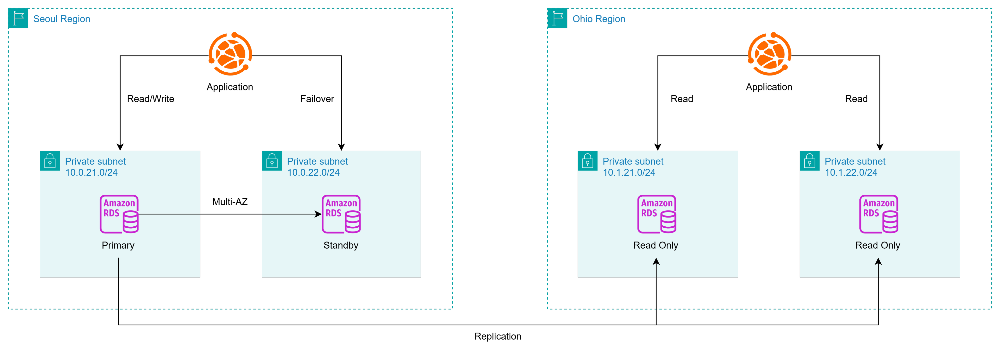
Replication 선이 리전을 넘는 비동기 복제다.트래픽 — 정적/동적 분리
빌드된 정적 파일은 S3 + CloudFront가, 동적 API 요청은 Global Accelerator → ALB → EKS가 받는다. 두 경로를 나눈 결과는 07 성과에 있다.

Health Check와 페일오버
Global Accelerator는 두 리전의 ALB를 엔드포인트로 두고 지연 기준으로 라우팅한다
(한국 → 서울, 미국 → 오하이오). 대상 그룹 헬스체크가 Unhealthy로 떨어지면
해당 리전을 빼고 살아 있는 쪽으로 넘긴다.
api-server는 /actuator/health:8080,
ai-module은 /health:8000으로 각각 확인한다.
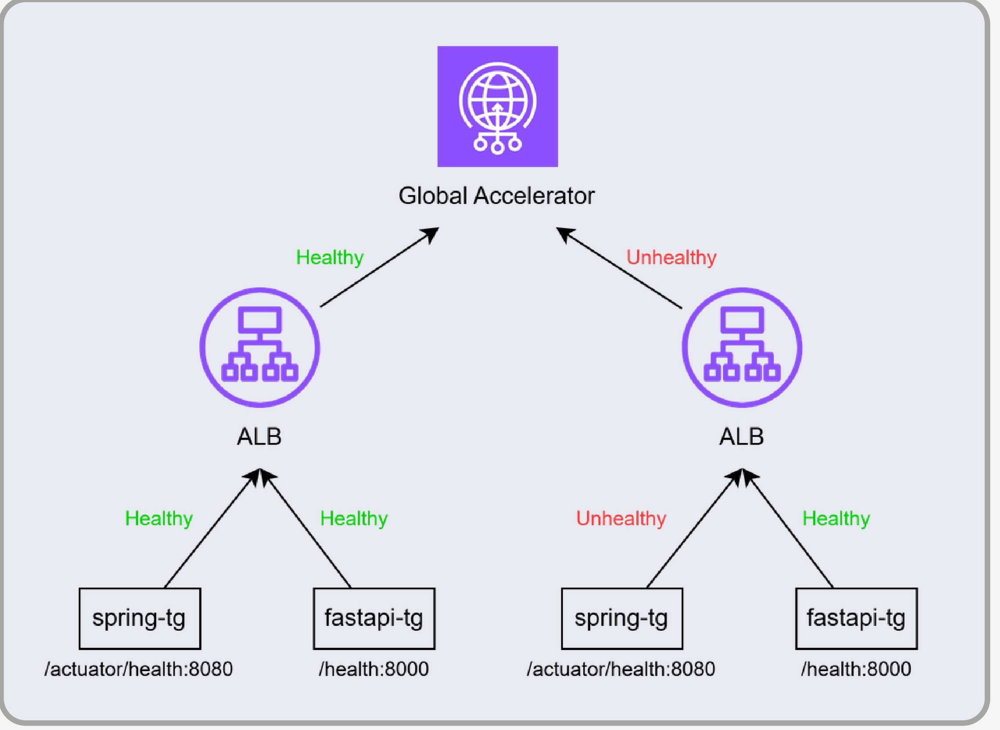
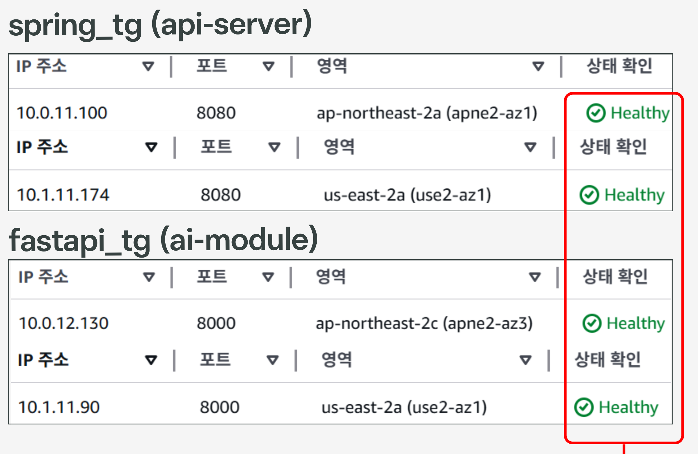
10.0.x 서울 / 10.1.x 오하이오)이다.IoT 데이터 수집 — 실시간/이력 이중 경로
현장 센서 데이터는 Mosquitto Bridge가 인증서로 IoT Core에 연결해
sensimul/sites/+/sensors/+ 토픽으로 올린다.
IoT Rule이 이 스트림을 한 번에 두 갈래로 흘린다.
| 경로 | 목적지 | 용도 |
|---|---|---|
| 실시간 | SQS → EKS api-server (IRSA로 consume) | 화면에 바로 반영되는 현재값 |
| 이력 | Firehose → S3 (GZIP 파티셔닝) | 장기 보관 · 사후 분석 |
두 경로를 나눈 이유는 요구 특성이 정반대이기 때문이다.
실시간 쪽은 지연이 짧아야 하고, 이력 쪽은 건당 쓰기가 잦으면 비용이 커진다.
그래서 Firehose는 buffering_interval = 900초로 묶어
S3 PUT 요청 수를 줄이고 객체 하나를 크게 만들었다.
한쪽 경로가 막혀도 다른 쪽은 계속 도는 구조이기도 하다.
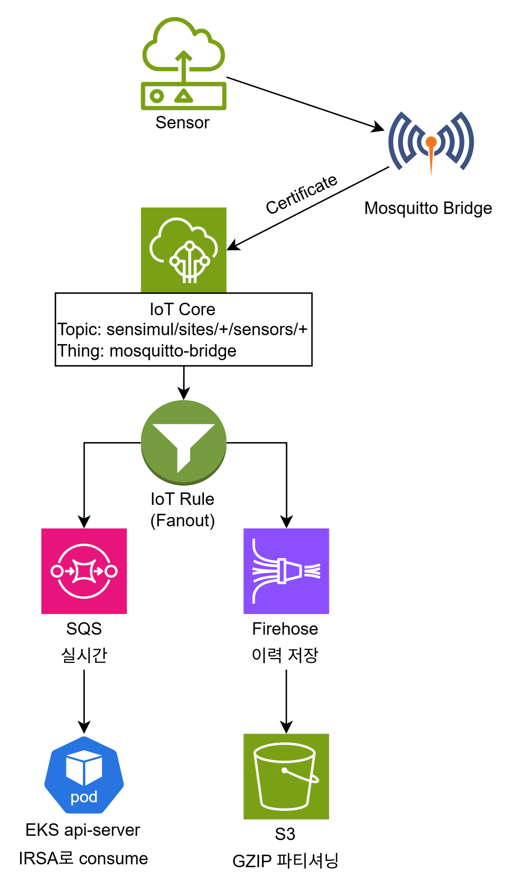
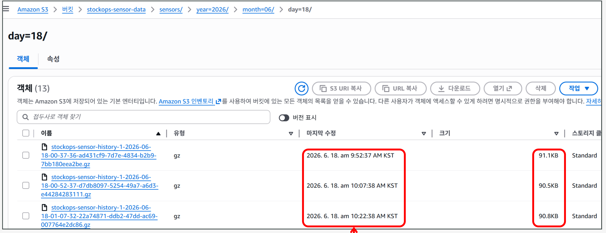
9:52 → 10:07 → 10:22.
buffering_interval = 900이 실제로 15분 배치로 동작한 결과다.HPA + Karpenter 2단 오토스케일링
파드 수는 HPA가, 그 파드를 올릴 노드는 Karpenter가 각각 늘린다.
| 대상 | min | max | 기준 |
|---|---|---|---|
api | 1 | 4 | CPU 60% |
ai | 1 | 4 | CPU 60% + Memory 70% |
인스턴스 t3.medium / t3.large · Spot 우선 · consolidateAfter = 1분

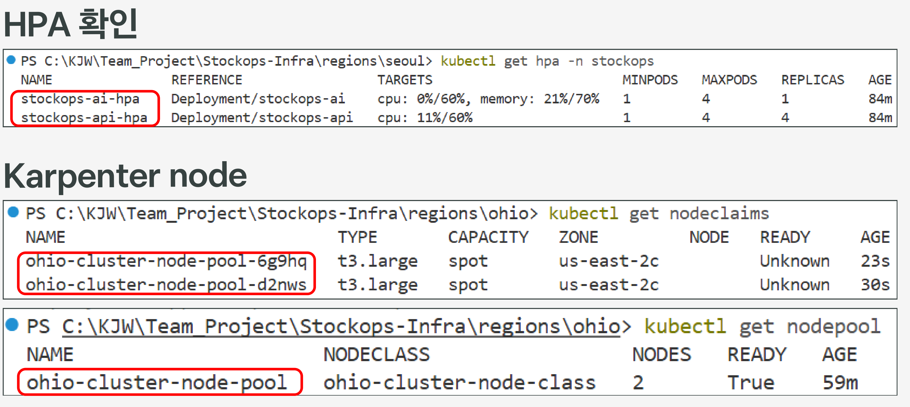
stockops-api-hpa가 max인 4까지 올라간 시점에
nodeclaims에 t3.large Spot 노드 2대가 23s · 30s 전 생성으로 잡혀 있다.
HPA가 먼저 늘고 Karpenter가 뒤따랐다는 증거다.CI/CD 두 경로
Frontend
GitHub Actions가 client/admin을 빌드해 S3 sync → CloudFront 캐시 무효화. 컨테이너 이미지가 필요 없고 EKS와 무관하다.
Backend
서비스별 1회 빌드 후 동일 SHA 태그로 두 리전 ECR에 push → GitOps 레포의 이미지 태그 갱신 → 각 클러스터의 ArgoCD가 Auto Sync.

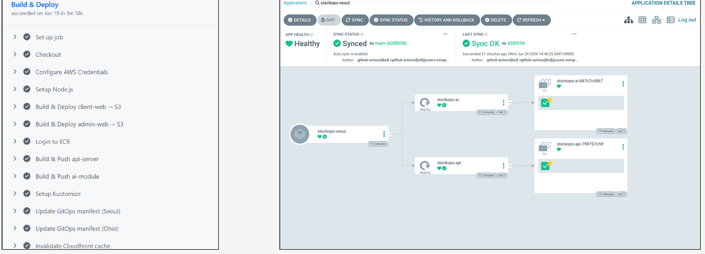
3분 58초에 전 스텝 성공,
오른쪽 ArgoCD가 같은 커밋(d30f358)으로 Synced / Healthy.
Update GitOps manifest (Seoul/Ohio) 스텝이 두 리전을 함께 갱신한다.보안 ① 네트워크 계층 — 보안 그룹 단방향 체인
인바운드를 alb-sg → app-sg → db-sg 방향으로만 열어, 계층을 건너뛴 접근 경로를 만들지 않았다.
핵심은 source를 IP 대역이 아니라 SG ID로 지정했다는 점이다.
CIDR로 열면 같은 VPC 안의 다른 리소스도 같이 통과하지만, SG 참조는 그 보안 그룹에 속한 것만 통과한다.
| 원칙 | 적용 |
|---|---|
| 최소 권한 | ALB SG ID를 source로 직접 지정 — 동일 VPC 내 불필요한 접근 차단 |
| 포트 최소화 | ALB → EKS 구간을 서비스별로 분리(80 / 8080 / 8000). 포트 범위 대신 개별 규칙으로 명시 |
| RDS 격리 | 인터넷 → RDS 경로 제거. app-sg + Peering CIDR만 5432 인바운드 허용 |
| 크로스 리전 | Seoul → Ohio Replica(읽기 부하 분산) · Ohio → Seoul Master(RDS 복제 동기화) |
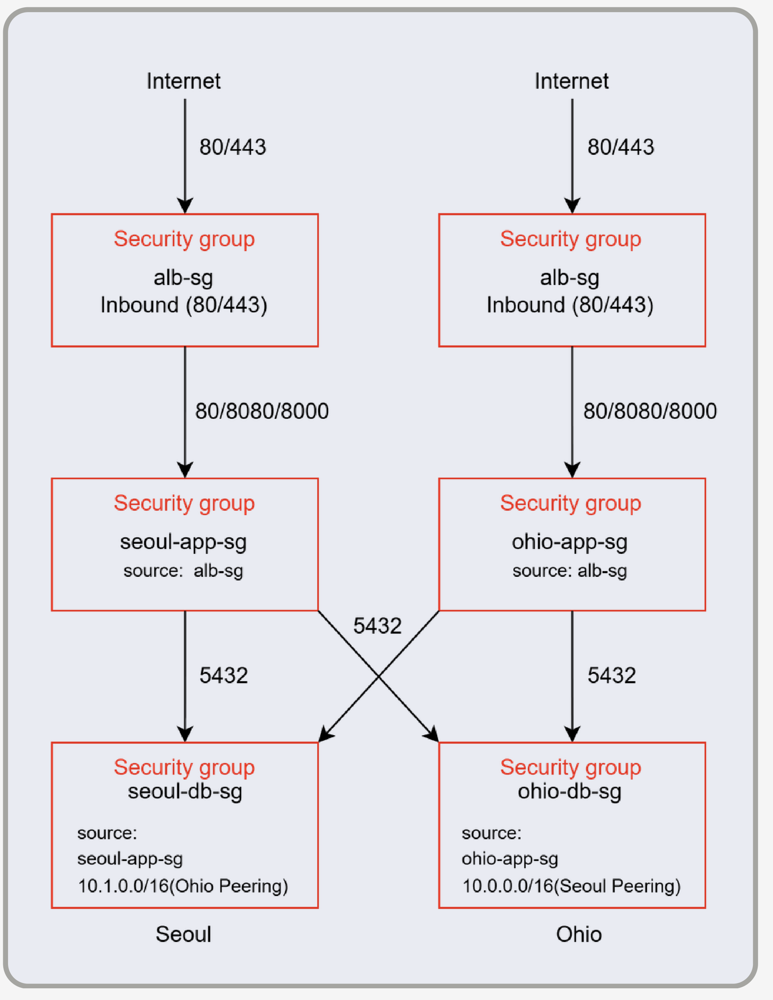
db-sg의 source에 상대 리전 Peering CIDR이 함께 들어간다.보안 ② 애플리케이션 계층 — WAF 2계층
정적 경로(CloudFront)와 동적 API 경로(ALB)는 진입 지점이 다르므로, 각각에 별도 WebACL을 걸었다. 엣지에서 한 번, 리전에서 한 번 거른다.
| 계층 | 룰 | 역할 |
|---|---|---|
| CloudFront 엣지 |
AWSManagedRulesCommonRuleSet | XSS · 악성 파일 업로드 · HTTP 프로토콜 위반 탐지 |
AWSManagedRulesAmazonIpReputationList | AWS가 수집한 악성 IP(봇 · 스캐너 · 해킹 시도 이력)와 대조해 차단 | |
| ALB 리전 |
AWSManagedRulesCommonRuleSet | CloudFront와 동일 |
AWSManagedRulesKnownBadInputsRuleSet | Log4Shell · Spring4Shell 등 알려진 익스플로잇 패턴 차단 | |
AWSManagedRulesSQLiRuleSet | SQL Injection 전용 룰셋 | |
LoginRateLimit custom | /api/v1/auth/login에 IP당 5분 100회 초과 시 차단 | |
RateLimit custom | 전체 경로 대상 IP당 5분 2000회 초과 시 차단 |
관리형 룰셋은 Count, 직접 만든 룰만 Block
광범위한 관리형 룰셋을 바로 Block으로 켜면 정상 요청까지 막힐 수 있는데, 무엇이 오탐인지는 켜 보기 전엔 모른다. 그래서 관리형 룰셋은 Count 모드로 두고 매칭 로그만 쌓았고, 동작을 내가 정확히 아는 커스텀 RateLimit만 Block으로 걸었다. 차단 범위를 검증한 만큼만 넓히는 쪽을 택했다.
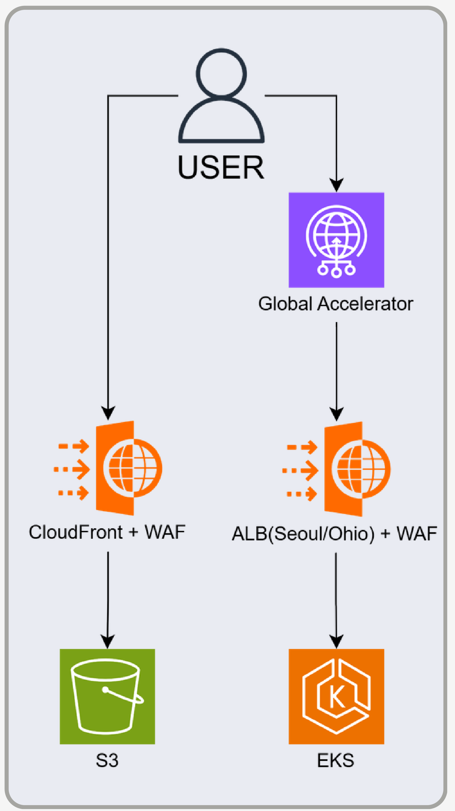
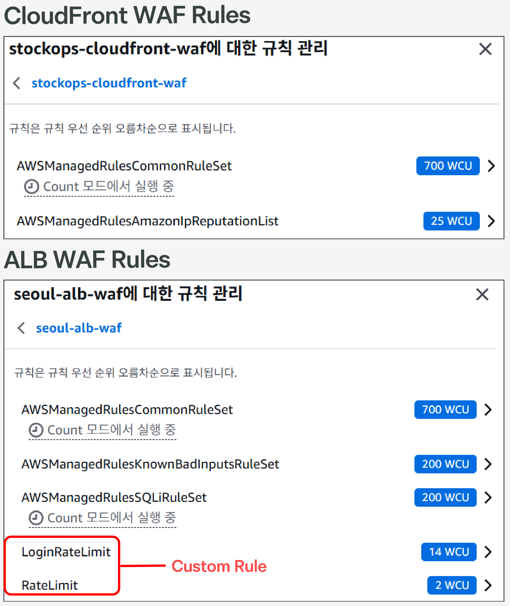
Count 모드에서 실행 중이 붙어 있다.보안 ③ 키리스 인증 — GitHub OIDC · IRSA
파이프라인과 파드 어느 쪽에도 장기 액세스 키를 두지 않았다. 둘 다 OIDC로 신원을 증명하고 그때그때 임시 자격증명을 받는다.
GitHub Actions → AWS
워크플로가 OIDC Token을 AWS STS에 제시해 IAM Role을 맡는다.
Role에는 ECR Push · S3 Sync · CloudFront Invalidation 권한만 붙였고,
신뢰 정책에 main 브랜치 조건을 걸어 다른 브랜치에서는 Assume 자체가 안 된다.
파드 → AWS (IRSA)
ServiceAccount가 EKS OIDC Provider를 거쳐 IAM Role에 매핑된다. ESO Role은 Secrets Manager만, API Role은 SQS만 볼 수 있게 역할을 나눴다.
둘의 공통 원리는 같다 — 발급되는 것이 임시 토큰이고, 만료되면 자동으로 소멸한다. 저장소나 클러스터에서 유출될 장기 키가 애초에 존재하지 않는다.
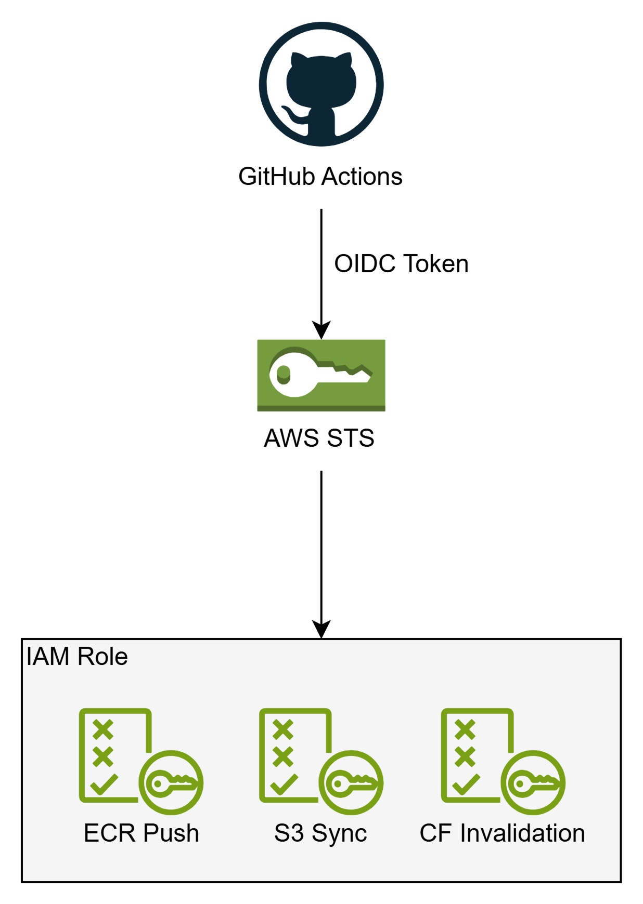
보안 ④ 시크릿 관리 · State 암호화
애플리케이션 시크릿 16종은 Secrets Manager의 stockops/app 한 곳에 두고,
External Secrets Operator가 1시간 주기로 클러스터에 동기화한다.
ESO Controller는 stockops-eso-role(IRSA)로 조회하고,
ClusterSecretStore → ExternalSecret → K8s Secret을 거쳐
stockops-api · stockops-ai 파드에 env로 주입된다.
매니페스트에는 시크릿 값이 들어가지 않는다. GitOps 레포가 공개돼 있어도 평문 자격증명이 남지 않고, 값을 바꿀 때 재배포도 필요 없다. Terraform State 역시 S3에 두되 KMS로 암호화했다.
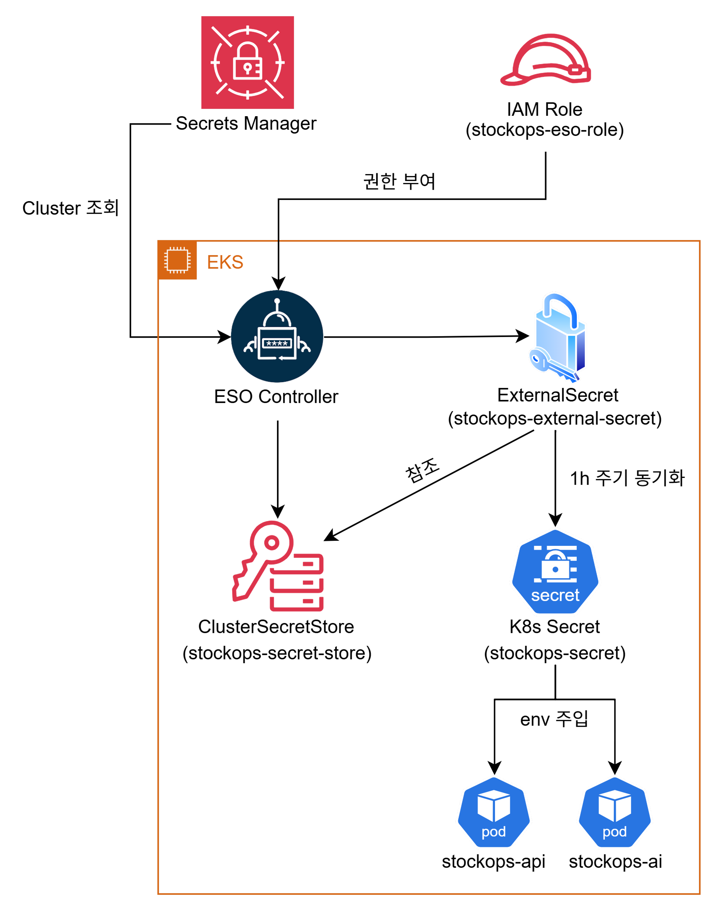
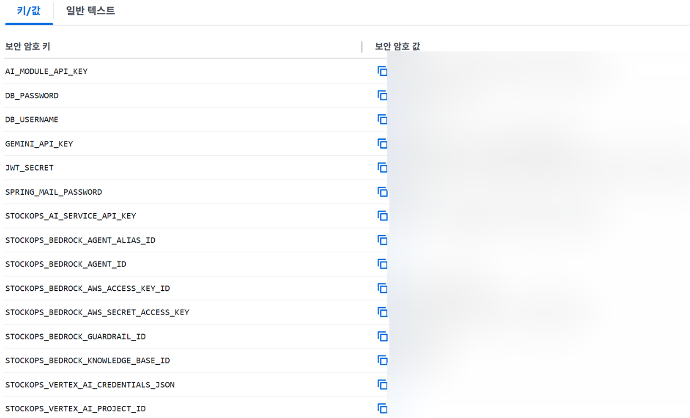
kubectl get externalsecret의 SecretSynced / True가 동기화가 실제로 돌고 있다는 증거다. 값 열은 가렸다.설계에서 고민한 것
State를 왜 네 개로 나눴나
리전별로만 나누면 두 리전을 잇는 VPC Peering이 어느 한쪽에 종속된다.
그 리전을 다시 적용하면 피어링 경로가 같이 재생성되면서 반대쪽 라우팅이 깨진다.
peering을 독립 실행 단위로 뽑아내자 서울과 오하이오를 서로 독립적으로
건드릴 수 있게 됐고, 리전 무관 리소스를 global로 분리해
리전 작업이 전역 설정을 건드리지 않게 했다.
다만 상태를 나누는 것만으로는 의존성이 관리되지 않는다는 걸 이후에 알았다.
적용 순서를 규칙으로 문서화하고, 하드코딩한 참조를
remote_state 출력값으로 교체한 뒤에야 재현성이 확보됐다.
Terraform과 ArgoCD가 서로 덮어쓰지 않게 하려면
둘 다 쿠버네티스 리소스를 만들 수 있어 경계를 안 정하면 서로의 상태를 되돌린다. 수명주기가 인프라에 묶이는가를 기준으로 나눴다.
| 소유자 | 관리 대상 |
|---|---|
| Terraform | Service · IRSA · HPA · Namespace · TargetGroupBinding |
| ArgoCD | Deployment (이미지 태그) |
replicas는 HPA가 소유하는 값인데 매니페스트에도 있으면
ArgoCD가 계속 원래 값으로 되돌린다. 매니페스트에서 빼고 Application에
ignoreDifferences: /spec/replicas를 걸어 싸울 여지를 없앴다.
자원이 부족할 때 노드를 늘리지 않은 이유
파드가 몰려 노드 증설 의견이 먼저 나왔지만, 무엇이 자원을 쓰고 있는지부터 봤다. 빌드된 정적 파일을 내려주는 프론트엔드 파드가 트래픽과 무관하게 자리를 차지하고 있었고, 그건 애초에 클러스터에 있을 이유가 없었다. S3 + CloudFront로 옮기자 운영 파드가 5개에서 3개로 줄었고, 프론트 수정이 서버 재배포와 분리되는 부수 효과도 생겼다.
팀이 처음엔 반대해서, 줄어드는 파드 수와 비용을 정리해 다시 설명한 뒤에 진행했다.
트러블슈팅
① 한쪽 리전을 다시 적용하면 다른 쪽 피어링 경로가 삭제됨
- 증상
- 서울 또는 오하이오를
apply하면 반대쪽 리전의 VPC Peering 라우팅이 사라짐 - 원인
- 리전 VPC 모듈이 라우팅 테이블을 통째로 덮어씀
- 해결
- 적용 순서 규칙 문서화 + 하드코딩 참조를
remote_state출력값으로 교체 - 결과
- 전체 삭제 후 재적용해도 동일 구성 재현
② 부하가 몰리자 파드가 Pending 상태로 멈춤
- 증상
- HPA는 파드를 늘리는데 스케줄될 노드가 없어 Pending에서 진행되지 않음
- 원인
- Karpenter의
SecurityGroupSelectorTerms가 참조하는 태그가 클러스터 보안 그룹에 누락 - 해결
aws_ec2_tag리소스로 태그 보강- 결과
- 30초 내 스팟 노드 자동 프로비저닝 (t3.large ×2)
③ IoT 기기는 발행하는데 DB 테이블이 비어 있음
- 증상
- 센서가 정상 발행하는데 최종 적재 테이블에 행이 쌓이지 않음
- 원인
- IRSA 권한 · 환경변수 · JSON 매핑(
@JsonProperty) 누락이 겹침 - 해결
- 권한 → 설정 → 코드 → 데이터 순으로 계층별 순차 교정
- 결과
- IoT Core → SQS → RDS 실시간 경로 복원
RESULT
성과
- 운영 파드
- 정적·동적 분리로 상시 점유 자원 제거 (40% 감축)
- STATE 재현
- 삭제 후 재적용해도 동일 구성 복원
- 정적 액세스 키
- GitHub OIDC · IRSA · Secrets Manager + ESO
- 배포 무인화
- Merge 이후 배포까지. 리전별 독립 롤백 가능
5 → 3
4개 전부
0개
수동 단계 0
산출물
이 화면 크기에서는 미리보기 대신 다운로드로 확인해 주세요.
왜 멀티 리전인가
가용영역 이중화로는 못 막는 것
Multi-AZ는 한 리전 안의 데이터센터 한 곳이 죽는 상황을 막는다. 하지만 리전 단위 서비스 장애는 그 리전의 모든 AZ에 동시에 영향을 준다. 이 경우 다른 리전에 살아 있는 사본이 없으면 서비스가 멈춘다.
지연 기반 라우팅의 의미
한국 본사와 미국 영업팀이 같은 서비스를 쓴다. Global Accelerator가 요청자에게 더 가까운 리전으로 보내면, 태평양을 왕복하지 않아 응답이 빨라진다. 장애 대비와 성능이 같은 구조에서 나온다.
데이터는 어떻게 따라가나
애플리케이션은 두 리전에 똑같이 떠 있어도, 데이터가 한쪽에만 있으면 페일오버가 안 된다. RDS Cross-Region Replica로 오하이오에 복제본을 두어 서울이 끊겨도 읽을 데이터가 남아 있게 했다.
공짜가 아니다
리전을 하나 더 두면 인프라 비용과 관리 대상이 그만큼 늘어난다. 그래서 오하이오는 대칭 복제가 아니라 Failover 역할로만 두고, 상시 트래픽은 서울이 받도록 설계했다.
기술 스택
4인 팀 프로젝트의 전체 스택이다. 내 담당 영역을 함께 표기했다.
| 영역 | 기술 | 담당 |
|---|---|---|
| 네트워크 | VPC · 3-Tier Subnet · ALB · Global Accelerator · CloudFront · Route53 | ● |
| 컨테이너 | EKS · Kubernetes · Karpenter · HPA · Helm | ● |
| IaC | Terraform — 재사용 모듈 8종 · State 4분리 · S3 backend + KMS | ● |
| CI/CD | GitHub Actions(OIDC) · ArgoCD · Kustomize | ● |
| 데이터 | RDS(Multi-AZ · Cross-Region Replica) · S3 | ● |
| IoT 파이프라인 | IoT Core · SQS(실시간) · Firehose(이력) | ● |
| 보안 | WAF 2계층 · IRSA · Secrets Manager + ESO · KMS | ● |
| 재해복구 설계 | 리전 장애 시나리오 · 페일오버 정책 (구현 Terraform 코드는 내가 작성) | ○ |
| 애플리케이션 | api · ai 서비스 · client / admin 웹 |
○ |
용어집
약어 정리.
IaC Infrastructure as Code
State Terraform 상태 파일
remote_state 다른 State의 출력값 참조
GitOps Git 기반 배포
kubectl이 필요 없다.HPA Horizontal Pod Autoscaler
Karpenter 노드 오토스케일러
consolidateAfter로 유휴 노드를 되돌린다.